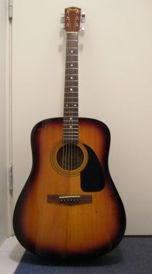
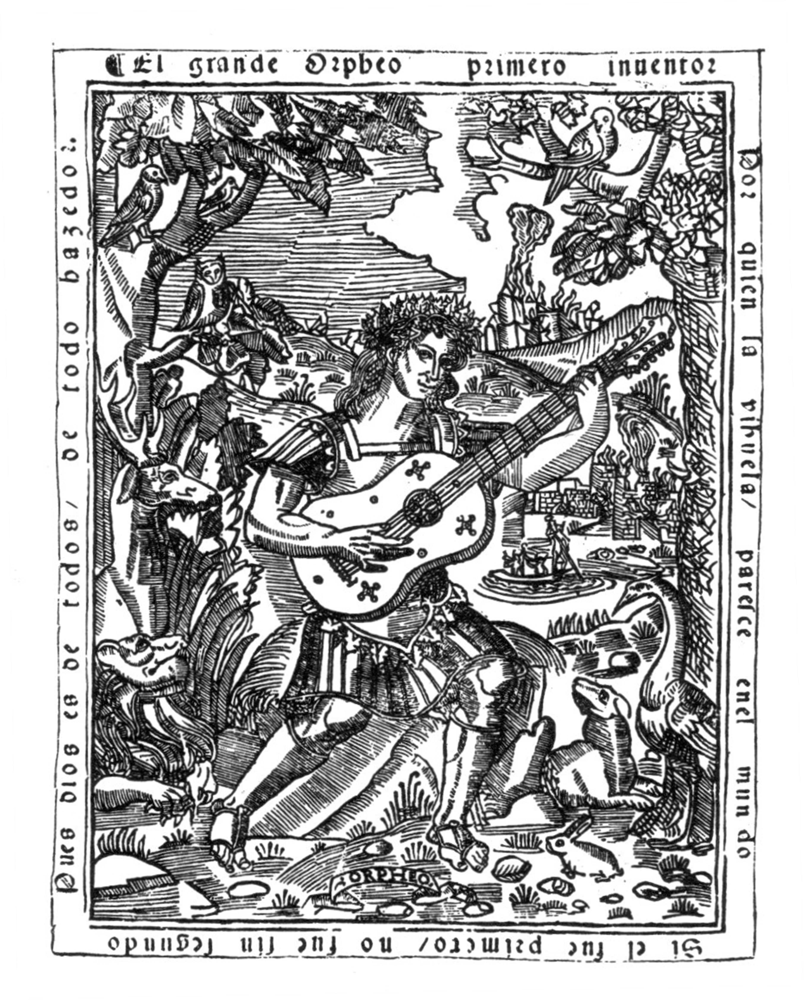

A gitár (nemzetközi szó a spanyol guitarra-ból, ez pedig – arab közvetítéssel – a görög kitharából) a húros hangszerek, ezen belül a pengetős hangszerek csoportjába tartozó hangszer. Megszólaltatása pengetővel, illetve ujjal történik. Általában hat húrja van. *A gitár kivitele szerint lehet klasszikus, akusztikus, elektromos vagy elektro-akusztikus. A gitár napjainkra hihetetlen népszerűségre tett szert. Szinte minden zenei stílusban képviselteti magát valamilyen formában. Ez leginkább sokoldalúságának köszönhető, hiszen az egyes gitárok típusuktól és zenei stílustól függően betölthetnek szólista szerepet, de megállják helyüket a ritmusszekcióban is. Gitáron éppúgy előadhatók klasszikus darabok, mint napjaink modern popzenéi, sőt a rock például elképzelhetetlen lenne e hangszer nélkül.
Néhány népszerű típusa:
A szó szoros értelmében vett gitárok valamikor a 15. század után jelentek meg, de természetesen jóval korábban – már az ókorban is – léteztek a gitárhoz hasonló, vagy arra emlékeztető húros, pengetős hangszerek. A zavaros hangszerelnevezések és hiányos történelmi adatok azonban nehezítik az ennél régebbi ismeretek rendszerezését. A legrégebbi fennmaradt gitár egy 1590 tájáról származó öt hangra hangolt, hangonként dupla húrozással ellátott hangszer.
Sokféle formájú, húrozású, működési elvű gitár létezik, de változatosságuk ellenére bizonyos vonásaikban megegyeznek. A gitár minden esetben rendelkezik egy hangszertesttel, valamint egy ebből kiinduló nyakkal aminek végén a hangszer feje található a hangolókulcsokkal.
A gitár feje a nyak végén található, a hangolókulcsoknak és a húrvezető nyeregnek ad helyet. A húrok a nyergen áthaladva csavarodnak rá a kulcsokra, melyek segítségével szabályozható az egyes húrok feszessége, így a megpengetett hang magassága. A hangolókulcsok elrendezését illetően beszélhetünk szimmetrikus, és aszimmetrikus elrendezésről, az általános elrendezés a 3+3-as, ahol mindkét oldalon 3-3 kulcs található.
A gitár nyakának hangszerjátékos szempontjából legfontosabb funkciója, hogy rajta található a fogólap, aminek segítségével az egyes hangok megszólaltathatóak.
Gitárnyak készítésére olyan faanyagot használnak, melynek jó a használat közbeni stabilitása, tehát sem a húrok feszítőereje, sem az idő múlása, az anyag öregedése, a klimatikus változások nem okoznak benne maradandó alakváltozást. Legalkalmasabb anyagok a cedrela, a mahagónifélék, a jávorfa.
A gitár húrjainak feszítettsége miatt a viszonylag vékony és hosszú nyak komoly statikai igénybevételnek van kitéve. A klasszikus gitár húrjai kb. 40 kilogramm súlynak megfelelő, a fémhúros gitároké majdnem kétszer ennyi terhelést képviselnek. Ez az erő a nyakat arra készteti, hogy íjszerűen meggörbüljön. A klasszikus gitár nyaka viszonylag vastag, a műanyag húrok húzóereje kisebb, így rendszerint a faanyag önmagában, megerősítés nélkül képes ezt az igénybevételt elviselni. Ezzel szemben a fémhúros gitárok feszítettsége nagyobb, ugyanakkor hagyományosan szűkebb húrkiosztással, karcsúbb nyakkal készülnek, emiatt a húrok terhelését itt valahogyan ellensúlyozni kell. Erre szolgál a nyakmerevítő pálca, egy enyhén íves fémrúd, mely a hangszer nyakának belsejében fut végig.
A leghagyományosabb gitártest a klasszikus, akusztikus gitárokra jellemző. Ez a rezgőtest, mely a tető-, hát- és az oldallapokból áll össze. Az ezeken a felületeken, elsősorban a tetőn létrejövő hajlítási hullámok sugározzák a térbe a gitár hangját. Belső térfogata üregrezonátorként működik, melynek nyílását a tetőn lévő kerek hanglyuk alkotja, ez szintén részt vesz a gitárhang megformálásában.
Egy másik megoldás fémből készült rezonátor alkalmazása, amely a nevét viselő rezonátoros gitároknál használatos. A lényege, hogy a húrok egy vagy több, fémből készült tányért hoznak rezgésbe, melyek rendkívül érdekes, fémes hangszínt adnak a hangszernek.
Az elektromos hangszedővel ellátott gitárok teste lehet tömör (solidbody) vagy féltömör (semi-solidbody).